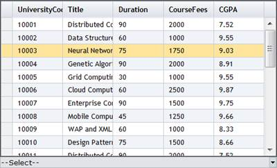

In order to work with this feature, follow the steps below:
1. Create a model in the application (Refer to Getting Started>Adding a Model to the Application).
2. In the view, create the MultiColumnDropDown control and configure its properties.
|
View [ASPX]
<%=Html.Syncfusion().MultiColumnDropDown<Student>("MultiColumnDropdown") .Datasource((IEnumerable) ViewData["data"]) .DisplayExpression(new int[] {2, 3, 5}) .Width(500) .Text("--Select--") %> |
|
View [cshtml] @(new HtmlString(Html.Syncfusion().MultiColumnDropDown<Student>("MultiColumnDropdown") .Datasource((IEnumerable) ViewData["data"]) .DisplayExpression(new int[] {2, 3, 5}) .Width(500) .Text("--Select--") .ToString()))
|
3. Specify the pop-up direction using the PopupDirection() method.
|
View <%=Html.Syncfusion().MultiColumnDropDown<Student>("MultiColumnDropdown") .Datasource((IEnumerable) ViewData["data"]) .DisplayExpression(new int[] {2, 3, 5}) .Width(500) .AutoFormat(Skins.Office2007Black) .PopupDirection(GenericDropDownPopupDirection.Up) .Text("--Select--") %> |
|
View [cshtml] @(new HtmlString(Html.Syncfusion().MultiColumnDropDown<Student>("MultiColumnDropdown") .Datasource((IEnumerable) ViewData["data"]) .DisplayExpression(new int[] {2, 3, 5}) .Width(500) .AutoFormat(Skins.Office2007Black) .PopupDirection(GenericDropDownPopupDirection.Up) .Text("--Select--").ToString()))
|
Run the application. The grid will appear as shown below.

Figure 314: MultiColumnDropDown Control with Upward Direction